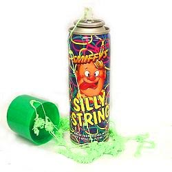

CSCI E-168: Ruby and Ruby on Rails
John G. Norman
, <
john@7fff.com
>
Hit the space bar for next slide
Warnings and Encouragements
Ruby requires practice
Blocks may be a new experience
irb is your friend
Pickaxe is loaded with examples
Agenda
About tonight's slides
Numbers, String
Symbols, Regular Expressions
Arrays (maybe)
Hashes (maybe)
About tonight's slides
Check "irb-style" to see expression result in a comment
Uncheck and the code must "print" output
When checked, can't do multiline statements (if / else / end)
print vs. puts vs. p
a = "hello, world!" puts a p a
Preview of classes, objects, and messages (methods)
The things we play with in Ruby are called objects
An object has a class
The class defines the messages to which the object can respond
We send messages such as "length" to an object of a class
If the object can respond, it returns a message
How to send a message to an object
Follow an object literal or the name of an object with a dot and the name of the message
NOTE: Frequently in docs, in ri, and here, will say #name to indicate method you call on an object; more on this later
10.zero? 10.class n = 20 n.zero? n.class s = "John" s.reverse
Names
Local variables start with a lowercase letter
Class names start with an uppercase letter
Can create objects of a class by following class name with ".new"
(send the message "new" to the class)
a = Array.new a.size a.push(15) a.push(25) a.push(35) a.size a.reverse
Class hierarchies
An object's class may have a superclass (think parent class)
superclasses define additional messages
Animal kingdom: Collie → Dog → Mammal
Vehicles: Camry → Sedan → Automobile
Ruby: Fixnum → Integer → Numeric
Ruby also has an idea of an included module, so:
Ruby: Array includes module Enumerable
Why are we belaboring this?
For Assignment 1, you may want to do something with an Array;
Functionality may be defined in a superclass or module!
Doc for Array
You can also send .superclass and .ancestors methods
Array.ancestors Fixnum.superclass
Numeric
At the very least, Ruby is a great calculator
10 + 5 (10 + 2) / 2 (10 + 1) / 2 10.5 + 10.5 (10.5 + 10.5) / 2.0 (10 + 11) / 2 (10 + 11) / 2.0
Fixnum
Fixnum is a class for your garden-variety signed integer
Smallish numbers are objects of the class Fixnum
So . . . the class of 5 is Fixnum
The max value is whatever can be expressed in the machine's idea of an integer
OS X Intel: -2147483648 .. 2147483647 (i.e., from -(2**31) to (2**31) - 1)
JRuby: -9223372036854775808 .. 9223372036854775807 (i.e., from -(2**63) to (2**63) - 1)
What's bigger than a Fixum?
Add 1 to the largest Fixnum
### Doing some arithemetic # NOTE: You will have to change the power to 31 for Intel f = (2**63) - 1 f.class f = f + 1 f.class f = f - 1 f.class
Bit more about Fixnums
Hex (base 16), Octal (base 8), or Binary: Prefix Fixnum with 0x, 0, or 0b (respectively)
So . . . No leading zeroes for decimal!!: 0500 means 500 Octal
Use _ for a comma separator: 700_000_000_000 (700 billion)
Remember, numbers are truly objects
Sending messages to a Fixnum
n = -5 n.abs n.zero? ## From Object n.to_s ## From Integer n.next
Floating point numbers
optional sign, then digits followed by decimal point, additional digits
Example: -1.01
Can follow with exponent: letter "e" followed by sign and digits
Example: 6.02e23
Mix Fixnum and Float and get a Float
5 / 2 5 / 2.0
Floats and arithmetic
Floats and comparisons
Due to round-off, see if numbers within a range
### Floating point arithmetic x = 9.0 / 10.0 y = 9.0 / 100.0 * 10.0 x == y # oops (x - y).abs < 0.001
BigDecimal
Many decimal places
If you're dealing with pennies, use BigDecimal
Math with lots of digits
Can do things like "bankers' rounding"
require 'bigdecimal' BigDecimal('1') / BigDecimal('3') a = BigDecimal('4.055') a.round(2, BigDecimal::ROUND_HALF_UP) a.round(2, BigDecimal::ROUND_HALF_DOWN)
Strings

Strings
Very powerful in Ruby
Many Array/Enumerable methods work on Strings (e.g., "foo".reverse)
Operators do interesting things: e.g., * repeats a string, << means append to end, etc.
Favorite methods: upcase, downcase, slice, capitalize, tr, reverse
Strings, under the covers
Ruby Strings encoded in UTF-8
Ruby 1.8: String is a sequence of 8-bit bytes (more like C)
In regular irb, show UTF-8
### Selecting an element of a String s = "john" s[2] s.length
Splitting Strings
Lots of ways to split a String, but Ruby provides convenience method
split(): split a String wherever there is whitespace
split('-'): split by arbitrary String
split(''): split by "nothing"
split(/-|,|\./): split by regular expression (more on Regexp later)
Companion is Array#join
"What time is it?".split "555-1212,x100".split('-') "555-1212,x100".split('') "555-1212,x100".split(/-|,|\./)
Substrings
s[n] to get character at index n
Ruby 1.8: s[n] returns ASCII value
s[n, len] to get len chars starting at n
s[start..end] to get a range of chars
Negative indexes wrap around
"McCain"[2] "Obama"[2, 3] "Barack"[0..2] "John"[-1] "John"[2..-1]
Character Literals; Converting to from character "ordinals"
Precede char with ? to get String for that letter
Then use .ord to get the "integer ordinal"
Use Integer#chr to get a String
Ruby 1.8: ?A's value IS the numeric ASCII value (don't do .ord)
?A ?A.ord ?A.ord + 1 (?A.ord + 1).chr
Defining Strings
Double-quoted Strings: provides for interpolation
Double-quoted Strings: Full escape codes
Single-quoted Strings: More literal, less escaping: Read PR
%q to use your own delimiters for single-quote-style
%Q to use your own delimiters for double-quote-style
### String initialization i = 17 s = 'My daughter has a birthday' s = "My daughter has a birthday on October #{i}" s = %q{The party's at my place.} "Remember: #{i.to_s * 3}" %Q|"Seventeen #{i}"|
About String interpolation
Yes, you can add (concatenate) Strings
But Rubyists use interpolation all the time
name = 'John' email = 'john@7fff.com' name + ' (' + email + ')' "#{name} (#{email})"
"Here" documents
Like Perl
Way to do long String literals
Variations to suppress interpolation, have whitespace in front of end flag
See PR for more
a = <<DONE hi there DONE puts a
Conversions between Strings and Numbers
remember .to_s and .to_i
### Simple conversions i = 5 i.to_s i.to_s.class s = "10" s.to_i s.to_i.class
Variables (1)
You can name a reference to an object
a = "John"
Variables (2)
Set two variables to the same object
Change the object referred to by one variable
... The other variable still points to the same object
### Assignments means making another variable point to same object a = "John" b = a a << ", John, the Piper's Son" b # Sometimes you need a copy... a = "John" b = a.dup a << ", John, the Piper's Son" b
Conventional Operators
Basic arithmetic: + - * / ** %
Logic: && ||
Bitwise logic: & | ^
Comparisons: < > == != === <=>
Ternary: ? :
(will come back to some of these, e.g., === and <=>)
More Unusual Operators
Exponentiation: **
Modulo: %
Bitwise exclusive-or: ^
No >>> shift operator (with zero shifted into leftmost bits as in Java)
Not equals: != (there is no <> operator)
No postfix operators (can't do a++ to mean a = a + 1; use a += 1)
Operator Precedence
See PR
true, false, conditionals and nil
In Ruby, nil, false, and true are all objects
An expression is "true" if it doesn't evaluate to nil or false
NOTE: Zero (0) evaluates to true
We will see below occasionally use of the "if" statement or modifier
true, false, conditionals and nil: subtle examples
A number is neither nil nor false, so evaluates to "true"
5 ? "True" : "False" 0 ? "True" : "False" ### .index returns nil if not found, otherwise starting char index "John".index('o') "John".index('o') ? "True" : "False" "John".index('x') "John".index('x') ? "True" : "False"
Standard type: Symbol
A Symbol uniquely represents a name
colon followed by name, e.g., :all, :first, :conditions, :include
Good for enums: :up, :down:, :right, :left
Think of it as an immutable String, and (in 1.8) with no String operation methods
String vs. Symbol: "bar" can be stored many times; :bar only once
### String vs. Symbol a = [ "bar", "bar" ] a[0].object_id a[1].object_id b = [ :bar, :bar ] b[0].object_id b[1].object_id
Symbol used for Hash keys
Ideal for Hash keys
Ruby's way of supporting "named parameters"
Used
everywhere
in Rails to define option values
def do_something(options) if options[:burn_after_print] puts "Torched!" else puts "Not burned." end end do_something( { :copies => 10, :two_sided => true, :burn_after_print => true } ) ## If last param, can omit braces do_something( :copies => 10, :two_sided => true, :burn_after_print => false )
Standard type: Symbol (more)
Has a .to_s method
For Strings (and Symbol!), you can write .to_sym
Can use quote marks: Can write :"foobar", :"$&$!!" and the like
Standard type: Regular Expression (Regexp)
Could have a whole class in regular expressions
idioms
if "www.google.com" =~ /www\..*?\.com/ puts "It's a dot com web server host name" end if "www.google.com" =~ /www\.(.*?)\.com/ puts "It's a dot com web server host name for #{$1}" end
Object-oriented Regexp
Full object-oriented classes for doing Regexp (like Java)
r = Regexp.new('www\.(.*?)\.com') if matches = r.match('www.google.com') puts "It's a dot com web server host name for #{matches[1]}" end
Regexp via String
String has some useful Regexp methods
split, scan, gsub, gsub!
Also block forms of these methods
## Split against two separate characters, comma and semi-colon 'John,Paul;George,Ringo'.split(/,|;/) 'abcdefghijklmnopqrstuvwyxz'.split(//) ## Convert sentence into UbbiDubbi 'It was a dark and stormy night'.gsub(/([aeiou]+)/, 'ub')
Bonus slide: Operator Precedence Gotcha 1
Ruby has & (bitwize and) and && (logical "and") in typical precedence order (like C and Java) but also has an "and"; So,
total = shopping_cart.empty? and shopping_cart.total
Evaluates like:
(total = shopping_cart.empty?) and shopping_cart.total
THEREFORE, use the && operator because
total = shopping_cart.empty? && shopping_cart.total
Evaluates like:
total = (shopping_cart.empty? && shopping_cart.total)
You have been warned! See http://blog.jayfields.com/2007/08/ruby-operator-precedence-of-and-which.html
Similar issues for |, ||, and "or"
Bonus slide: Operator Precedence Gotcha 2
Another gotcha: In Ruby, bitwize ^ and | have same precedence: In C and Java, bitwize XOR is higher)
Java: 03 | 01 ^ 03 evaluates to 3.
Ruby: 03 | 01 ^ 03 evaluates to 0.
The End